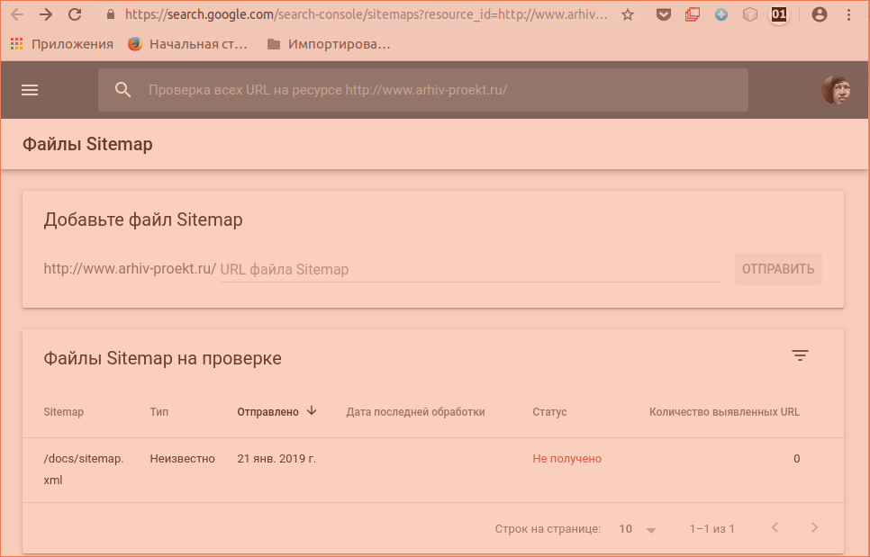

Адрес сайта:
arhiv-proekt.ru
Установленная CMS: -
Синонимы: h901105040.nichost.ru, www.arhiv-proekt.ru, www.h901105040.nichost.ru
IP-адрес сайта: 195.208.1.103
Корневой каталог: /home/h901105040/arhiv-proekt.ru/docs
=====================================
Ключевые слова:
проект, сети, инженерные сети, гражданских, гражданские, автомобильные дороги, дороги, разработка, разработка проекта, ремонт, капитальный ремонт. реконструкция, дк, больницы, архив, электо, электрооборудование
============================================
Как подтвердить права на домен в Google Search Console вручную?
Улучшите позиции вашего сайта в Google! Вы уже подключили домен к вашему сайту? Следуйте инструкциям здесь.
Подтверждение вашего домена с помощью Google Search Console помогает Google идентифицировать вас как владельца вашего сайта, делая его «заслуживающим доверия» в глазах Google. Когда ваш домен будет подтвержден, Google быстрее просканирует ваш сайт и, скорее всего, сайт окажется выше в результатах поиска Google.
Важно:
Данная статья относится к Редактору Wix. Если ваш сайт был построен c помощью Wix ADI, вы можете подключить ваш сайт к Google Search Console используя инструмент SEO-Wiz. Данная функция доступна только для сайтов с подключенным доменом. В настоящее время бесплатные пользователи ADI должны перейти в редактор и выполнить эти инструкции.
Чтобы вручную подтвердить свой сайт:
Перейдите в Google Search Console.
Нажмите Альтернативные способы и выберите способ код HTML. Примечание: Если вы не видите способ тег HTML во вкладке Альтернативные способы, нажмите на вкладку Рекомендованный способ.
Оставьте Google Search Console открытым, и в новой перейдите в Управление сайтом.
Нажмите на вкладку SEO.
Прокрутите до Дополнительные настройки SEO.
Добавьте скопированный вами мета-тег в поле в разделе Дополнительные настройки SEO.
Опубликуйте ваш сайт.
Вернитесь обратно в Google Search Console и нажмите Подтвердить.
Примечания:
Вы получите письмо на свою электронную почту от Google Search Console, когда ваш сайт будет отправлен на индексацию.
После того, как вы подтвердите свой сайт, вы можете отправить свою карту сайта непосредственно в Google с помощью Google Search Console, чтобы упростить Google сканирование и категоризацию вашего сайта. Нажмите здесь, чтобы узнать больше.
Нажмите здесь, если у вас возникли трудности проверкой вашего сайта вручную при помощи Google Search Console.
=====
Пользовательский поиск
Новая поисковая система
Изменение поисковой системы
Справка
Справочный центр
Справочный форум
Блог
Документы
Условия использования
Перейти на справочный форум
(задать вопрос)
Отправить отзыв
Поздравляем!
Вы установили на свой сайт Систему пользовательского поиска Google.
Код для сайта
Получить код
00000000000000000000000000000000000000000000000000
<div>
<script>
(function() {
var cx = '013101133770182050737:vix1zky9sqs';
var gcse = document.createElement('script');
gcse.type = 'text/javascript';
gcse.async = true;
gcse.src = 'https://cse.google.com/cse.js?cx=' + cx;
var s = document.getElementsByTagName('script')[0];
s.parentNode.insertBefore(gcse, s);
})();
</script>
<gcse:search></gcse:search>
</div>
0000000000000000000000000000000000000000000000000000
Ссылка для просмотра
Общедоступный URL
Изменить поисковую систему
Панель управления
========================
Номер или идентификатор счетчика - это уникальный номер счетчика, который отличает его от всех счетчиков, которые имеются в системе Яндекс.Метрика. По этому номеру вы можете обратиться к нему и взаимодействовать.
У начинающих пользователей может возникнуть вопрос, а где найти этот номер?
На самом деле все просто. В этой небольшой заметке я хочу просто показать, где это публикуется.
После того, как вы зайдете в свой аккаунт Яндекс Метрики, перед вами открывается список всех счетчиков, которые используются в вашем аккаунте Яндекс.
<!-- Yandex.Metrika counter -->
<script type="text/javascript" >
(function(m,e,t,r,i,k,a){m[i]=m[i]||function(){(m[i].a=m[i].a||[]).push(arguments)};
m[i].l=1*new Date();k=e.createElement(t),a=e.getElementsByTagName(t)[0],k.async=1,k.src=r,a.parentNode.insertBefore(k,a)})
(window, document, "script", "https://mc.yandex.ru/metrika/tag.js", "ym");
ym(51979322, "init", {
id:51979322,
clickmap:true,
trackLinks:true,
accurateTrackBounce:true,
webvisor:true
});
</script>
<noscript><div><img src="https://mc.yandex.ru/watch/51979322" style="position:absolute; left:-9999px;" alt="" /></div></noscript>
<!-- /Yandex.Metrika counter --=============
=================================
=================
Архив проектной документации на на строительство (реконструкцию, капремонт) гражданских
и производственных объектов, включая линейные - инженерные
сети и автомобильные дороги.
=====
Relap
Ваши домены
Поддерживайте актуальным список доменов, на которых вы используете виджеты Relap:
arhiv-proekt.ru
Воспользуйтесь формой, чтобы добавить домены.
1 Связать Relap с вашим сайтом
Первым шагом необходимо добавить Релап-скрипт на те страницы вашего сайта, которые будут попадать в рекомендации, и на которых будут установлены виджеты. После его установки наш сервер начнет обработку этих страниц, с тем чтобы после установки виджетов, в них попадали более релевантные рекомендации.
Скопируйте Relap-скрипт между тегами <head></head> в html документ каждой страницы вашего сайта, которая будет попадать в рекомендации:
В случае корректной установки Релап-скрипта ожидаемое время регистрации домена, около часа.
2 Добавить виджет
=====
Конструктор блока «Поделиться»
===
<script src="//yastatic.net/es5-shims/0.0.2/es5-shims.min.js"></script>
<script src="//yastatic.net/share2/share.js"></script>
<div class="ya-share2" data-services="vkontakte,facebook,odnoklassniki,moimir"></div>
=================================
Создайте свою учетную запись Sumo
Войдите в свою учетную запись
Создайте свою учетную запись Sumo
URL вашего сайта:
Адрес электронной почты:
Новый пароль:
Уже есть счет в сумо? Войти сейчас!
ИЛИ ЖЕ
=====
https://www.arhiv-proekt.ru/docs/sitemap.xml

====
screamingfrogseospider
SEO Spider Tool
The Screaming Frog SEO Spider is a website crawler, that allows you to crawl websites’ URLs and fetch key elements to analyse and audit technical and onsite SEO. Download for free, or purchase a licence for additional advanced features.
====
FAVICON minifoto
===================================
Использование Search Console для работы с сайтами
Добро пожаловать в Search Console!
Сервис Search Console предоставляет отчеты, инструменты и учебные ресурсы, которые помогут вам сделать свой контент доступным в Google Поиске.
Если вы ещё не работаете с Search Console, зарегистрируйтесь – это просто и бесплатно.
Как управлять сайтом в Search Console
Ежедневно
Search Console может сообщат вам по электронной почте о проблемах с сайтом, например в случае его взлома или при возникновении проблем со сканированием и индексированием. Мы также оповестим вас, если на сайте будут обнаружены нарушения рекомендаций по обеспечению качества.
Обратите внимание, что после проверки сайта данные отчетов Search Console станут доступны не сразу. Когда это произойдет, мы вас оповестим.
Ежемесячно
Приблизительно раз в месяц открывайте страницу статуса Search Console. Это самый простой способ быстро проверить статус сайта.
Убедитесь, что на сайте не увеличивается количество ошибок.
Проверьте, нет ли резких спадов в количестве получаемых кликов. Обратите внимание, что еженедельные спады на выходных, а также спады или скачки во время праздников – нормальное явление.
Когда меняется содержание
Проверяйте поисковый статус сайта в Search Console каждый раз, когда вы вносите в него существенные изменения.
При добавлении нового контента:
C помощью инструмента проверки URL убедитесь, что поисковые роботы Google имеют доступ к вашим страницам.
Сообщите, какие страницы нужно сканировать, обновив файлы Sitemap.
Разделы сайта, которые сканировать не нужно, укажите в файле robots.txt или с помощью тегов noindex.
Через несколько недель после публикации контента убедитесь, что количество индексированных страниц на вашем сайте растет.
При добавлении новых ресурсов:
Мы рекомендуем использовать один сайт, адаптированный под разные устройства. Если вы всё же хотите создать отдельный сайт для мобильных устройств, не забудьте добавить его в Search Console и связать его с главным сайтом с помощью тегов <link rel="alternate">.
Что касается нового международного контента, настройте таргетинг на нужную страну и добавьте на страницы элемент link с атрибутом hreflang.
При изменении доменного имени:
Используйте инструмент Изменение адреса, чтобы сообщить Google о новом местоположении сайта.
Как удалить страницу из результатов поиска
Используйте инструмент удаления URL и примите другие необходимые меры для предотвращения сканирования и/или индексирования страниц.
Другие темы
Как сделать так, чтобы мой сайт был первым в результатах поиска?
Что нужно знать о поиске
========
ОТКРЫТЬ ПАНЕЛЬ МОНИТОРИНГА MAIL.ru
<!-- Rating@Mail.ru counter -->
<script type="text/javascript">
var _tmr = window._tmr || (window._tmr = []);
_tmr.push({id: "3078675", type: "pageView", start: (new Date()).getTime()});
(function (d, w, id) {
if (d.getElementById(id)) return;
var ts = d.createElement("script"); ts.type = "text/javascript"; ts.async = true; ts.id = id;
ts.src = "https://top-fwz1.mail.ru/js/code.js";
var f = function () {var s = d.getElementsByTagName("script")[0]; s.parentNode.insertBefore(ts, s);};
if (w.opera == "[object Opera]") { d.addEventListener("DOMContentLoaded", f, false); } else { f(); }
})(document, window, "topmailru-code");
</script><noscript><div>
<img src="https://top-fwz1.mail.ru/counter?id=3078675;js=na" style="border:0;position:absolute;left:-9999px;" alt="Top.Mail.Ru" />
</div></noscript>
<!-- //Rating@Mail.ru counter -->
=======================================
==========================================
RAMBLER
<!-- Top100 (Kraken) Widget -->
<span id="top100_widget"></span>
<!-- END Top100 (Kraken) Widget -->
<!-- Top100 (Kraken) Counter -->
<script>
(function (w, d, c) {
(w[c] = w[c] || []).push(function() {
var options = {
project: 6509247,
element: 'top100_widget',
};
try {
w.top100Counter = new top100(options);
} catch(e) { }
});
var n = d.getElementsByTagName("script")[0],
s = d.createElement("script"),
f = function () { n.parentNode.insertBefore(s, n); };
s.type = "text/javascript";
s.async = true;
s.src =
(d.location.protocol == "https:" ? "https:" : "http:") +
"//st.top100.ru/top100/top100.js";
if (w.opera == "[object Opera]") {
d.addEventListener("DOMContentLoaded", f, false);
} else { f(); }
})(window, document, "_top100q");
</script>
<noscript>
<img src="//counter.rambler.ru/top100.cnt?pid=6509247" alt="Топ-100" />
</noscript>
<!-- END Top100 (Kraken) Counter -->
>>>>>>> 27f9934cadf41040b8fac654e4cebcd9275c9147
===============================================================================================
19.02.2023 - Счетчик
<!-- Yandex.Metrika counter -->
<script type="text/javascript" >
(function(m,e,t,r,i,k,a){m[i]=m[i]||function(){(m[i].a=m[i].a||[]).push(arguments)};
m[i].l=1*new Date();
for (var j = 0; j < document.scripts.length; j++) {if (document.scripts[j].src === r) { return; }}
k=e.createElement(t),a=e.getElementsByTagName(t)[0],k.async=1,k.src=r,a.parentNode.insertBefore(k,a)})
(window, document, "script", "https://mc.yandex.ru/metrika/tag.js", "ym");
ym(93657234, "init", {
clickmap:true,
trackLinks:true,
accurateTrackBounce:true,
webvisor:true
});
</script>
<noscript><div><img src="https://mc.yandex.ru/watch/93657234" style="position:absolute; left:-9999px;" alt="" /></div></noscript>
<!-- /Yandex.Metrika counter -->
=====================================================